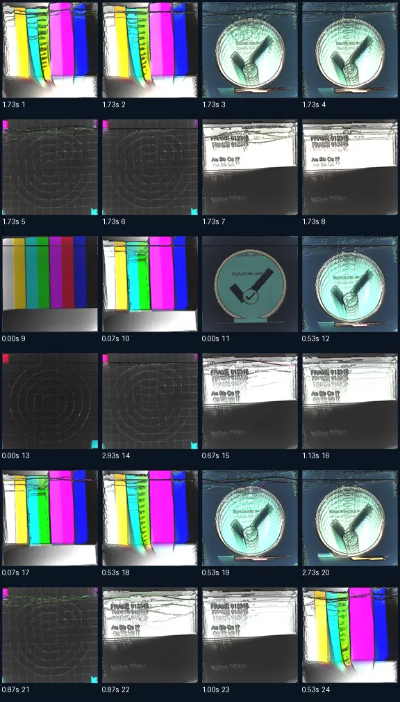
butterchurn · describedcope + martin - mother-of-pearl
An abstract visualisation built around turquoise and violet. With static inputs, output motion includes local warping.
Inspect supporting evidence →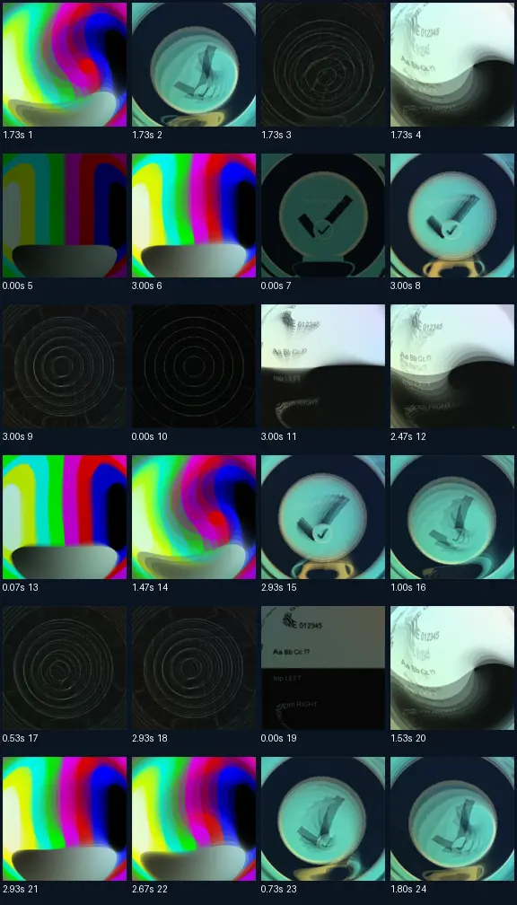
butterchurn · describedAderrasi - Contortion (Wide Twist Mix)
An abstract visualisation built around turquoise and green. The selected frames suggest ring-like forms with smooth gradients. With static inputs, output motion includes local warping, counterclockwise rotation, clockwise rotation.
Inspect supporting evidence →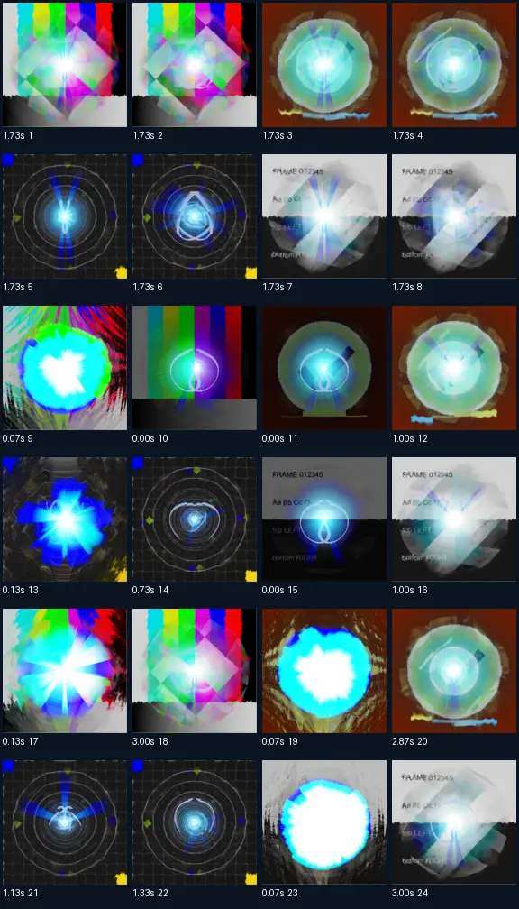
projectm · describedPhat + EoS - destroy me c
An abstract visualisation built around cyan and blue. The selected frames suggest ring-like forms and fine particles with soft glow. With static inputs, output motion includes local warping.
Inspect supporting evidence →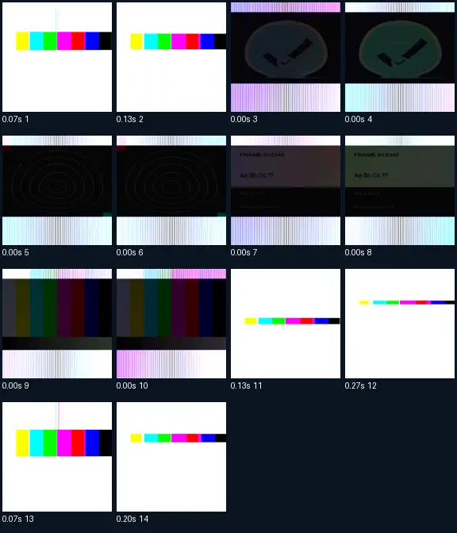
projectm · limitedyin - 190 - Temporal fluctuations
An abstract visualisation built around blue and cyan. The selected frames suggest striped patterns with smooth gradients. The available frames do not establish a reliable movement pattern. Some sampled frames wash out to almost pure white.
Inspect supporting evidence →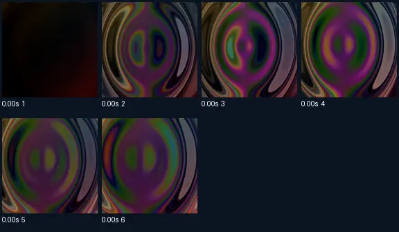
projectm · limitedshifter - interference field lens (beta 4b) - mash0000 - lovecraftian drama horror made sick flesh --- Isosceles edit1
A dark visualisation built around largely monochrome tones. The available frames do not establish a reliable movement pattern. Some sampled frames are almost completely black.
Inspect supporting evidence →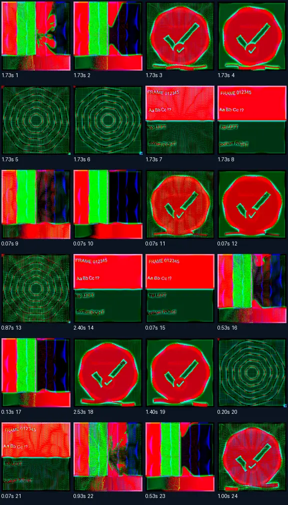
butterchurn · describedLuxXx - Hurty Soul I
An abstract, highly saturated visualisation built around pink and green. The selected frames suggest ring-like forms with soft glow. With static inputs, output motion includes local warping.
Inspect supporting evidence →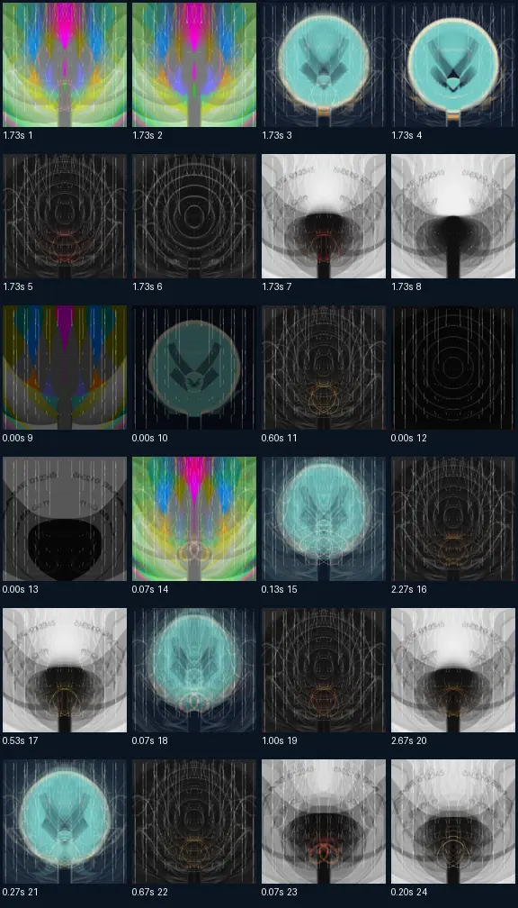
butterchurn · describedReenen - phoenix
An abstract visualisation built around red and turquoise. The selected frames suggest ring-like forms. With static inputs, output motion includes downward drift, local warping.
Inspect supporting evidence →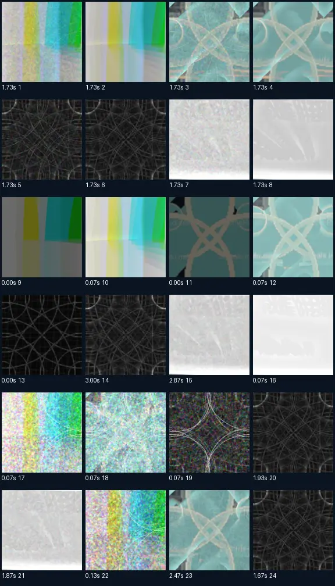
butterchurn · limitedGeiss - Skin Dots 11 Crossfire Composite
An abstract visualisation built around turquoise and cyan. The selected frames suggest fine particles and ring-like forms. The available frames do not establish a reliable movement pattern. Fine source detail is strongly reduced in many tested frames.
Inspect supporting evidence →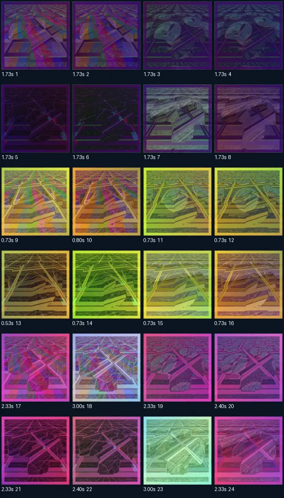
projectm · describedEMPR - Random - Look mama, I'm on TV! 2
A dark visualisation built around violet. The selected frames suggest fine particles with soft glow. With static inputs, output motion includes local warping, leftward drift.
Inspect supporting evidence →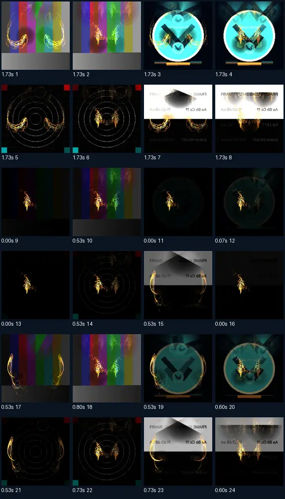
butterchurn · describedEo.S. + Phat - chasers 11 sentinel C_poltergeist_mix response daemon
An abstract visualisation built around orange and turquoise. The selected frames suggest fine particles and ring-like forms with soft glow. With static inputs, output motion includes local warping, outward expansion.
Inspect supporting evidence →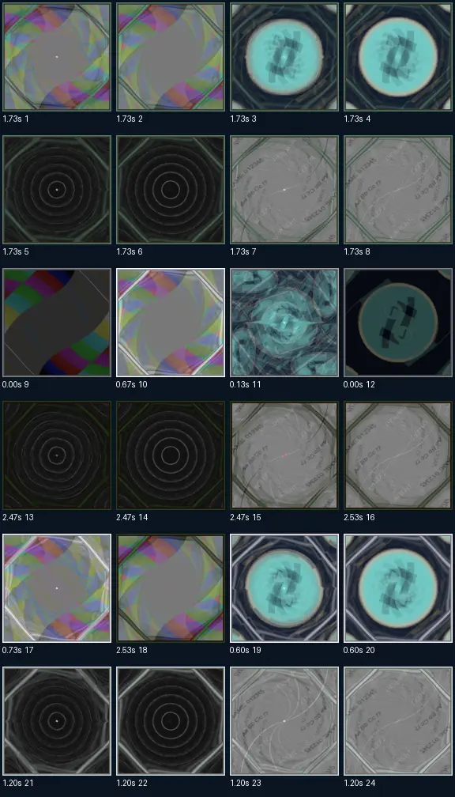
butterchurn · describedAderrasi - Brakefreak-bitcore tweak
An abstract visualisation built around turquoise. The selected frames suggest ring-like forms. With static inputs, output motion includes local warping.
Inspect supporting evidence →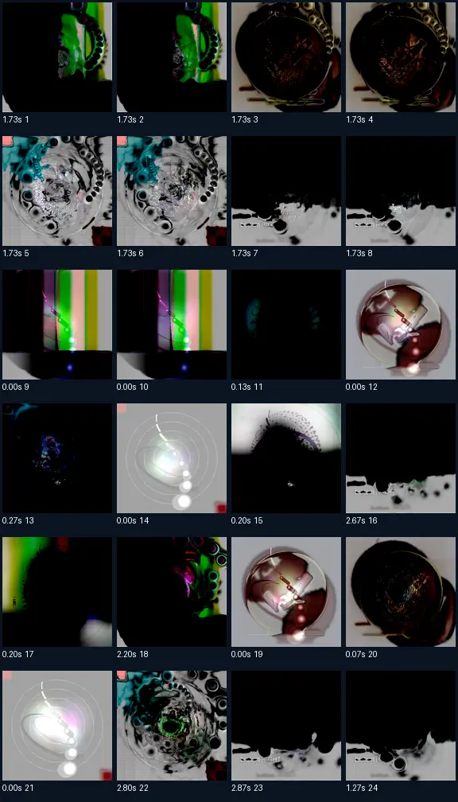
projectm · limitedamandio c - log tower 1 pig vomit 2uqle4 dorqstre plosiph
A dark visualisation built around cyan and orange. The selected frames suggest petal-like radial geometry and ring-like forms with smooth gradients. The available frames do not establish a reliable movement pattern.
Inspect supporting evidence →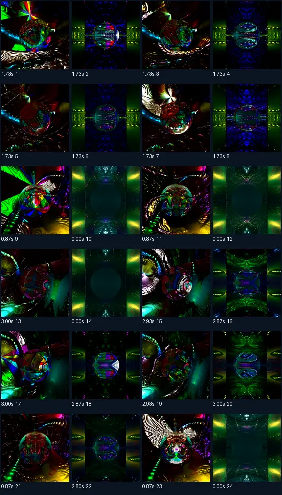
butterchurn · describedflexi + cope - i blew you a soap bubble now what - feel the projection you are, connected to it all nz+ wrepwrimindloss w8
A dark, highly saturated visualisation built around green and red. The selected frames suggest ring-like forms and petal-like radial geometry. With static inputs, output motion includes local warping, inward contraction.
Inspect supporting evidence →Evidence preview unavailable
projectm · unavailablemartin - liquid gold
No usable rendered frames are available; movement, artefacts and style remain unknown.
Inspect supporting evidence →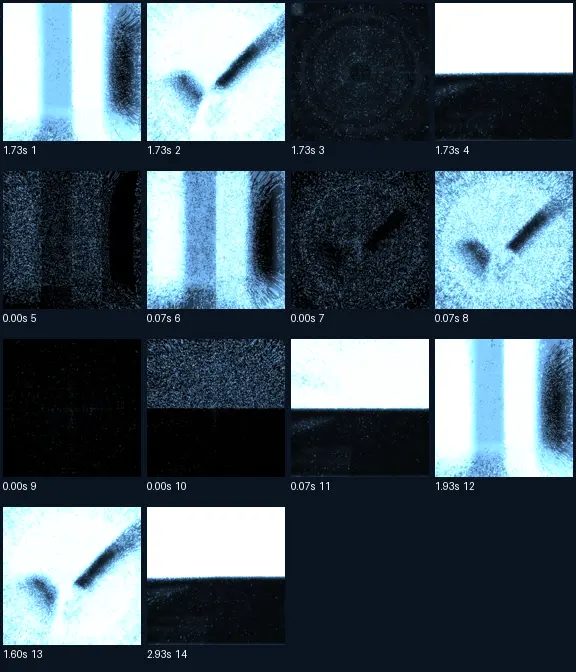
butterchurn · limitedGeiss - Artifact Plasma
A bright visualisation built around cyan and blue. The selected frames suggest fine particles and ring-like forms with soft glow. The available frames do not establish a reliable movement pattern.
Inspect supporting evidence →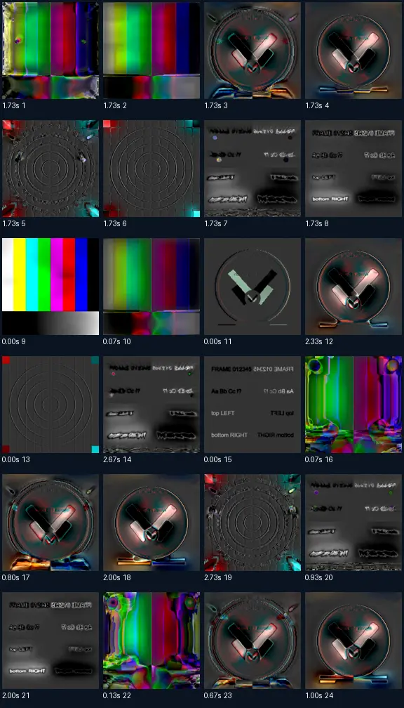
butterchurn · describedmartin + flexi - diamond cutter [prismaticvortex.com] - camille - i wish i wish i wish i was constrained
A dark visualisation built around red and turquoise. The selected frames suggest ring-like forms with smooth gradients. With static inputs, output motion includes local warping, inward contraction, outward expansion.
Inspect supporting evidence →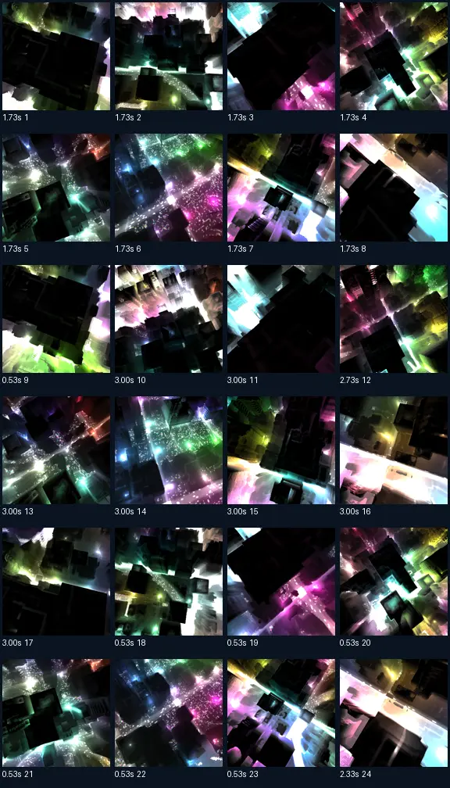
projectm · describedmartin - city lights v2
An abstract visualisation built around turquoise and magenta. The selected frames suggest fine particles with soft glow. With static inputs, output motion includes downward drift, outward expansion, rightward drift.
Inspect supporting evidence →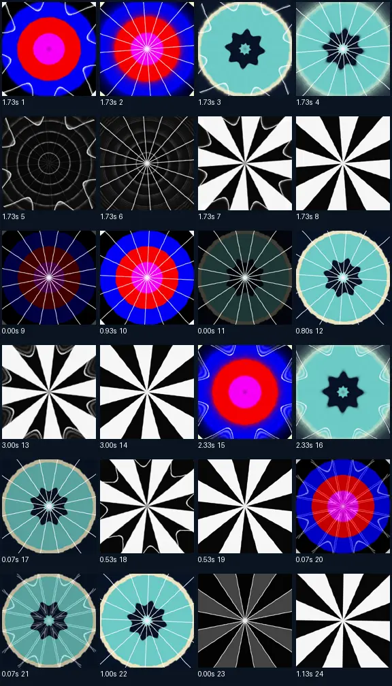
projectm · described$$$ Royal - Mashup (104)
An abstract visualisation built around turquoise and indigo. The selected frames suggest ring-like forms and striped patterns with fine linework. With static inputs, output motion includes counterclockwise rotation, outward expansion, local warping.
Inspect supporting evidence →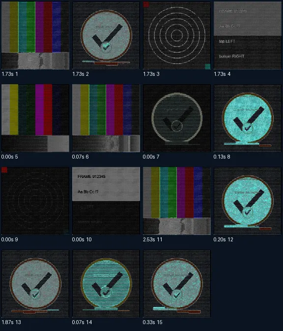
projectm · limitedFlexi - disruptor [vision of eggs]
A dark visualisation built around turquoise and red. The available frames do not establish a reliable movement pattern.
Inspect supporting evidence →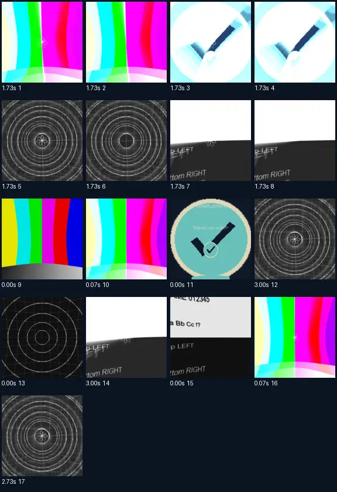
butterchurn · limitedGeiss - Flower
A bright visualisation built around turquoise and violet. The selected frames suggest ring-like forms and striped patterns with smooth gradients. The available frames do not establish a reliable movement pattern.
Inspect supporting evidence →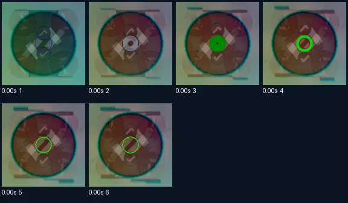
projectm · limitedORB - Acid Cycle [ En D's Sweet taste of diffusion and black magik
A dark visualisation built around largely monochrome tones. The available frames do not establish a reliable movement pattern. Some sampled frames are almost completely black.
Inspect supporting evidence →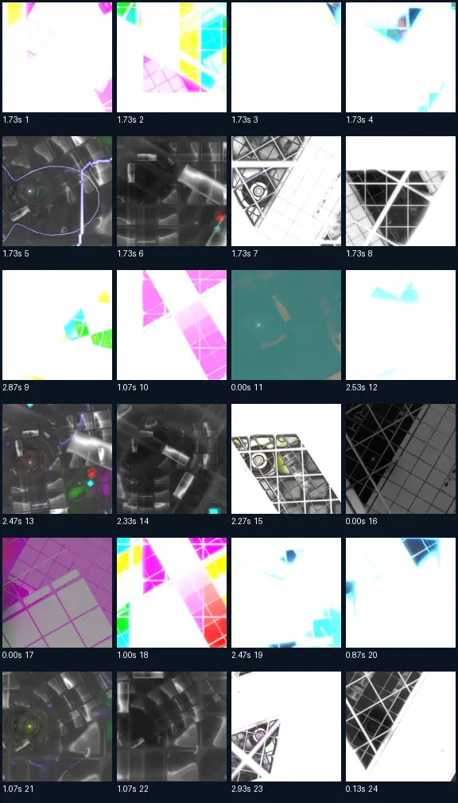
butterchurn · describedAn AdamFX n Martin Infusion 2 flexi - Why The Sky Looks Diffrent Today - AdamFx n Martin Infusion - Tack Tile Disfunction B
A bright visualisation built around turquoise and violet. The selected frames suggest abstract forms with blocky shapes. With static inputs, output motion includes inward contraction, local warping, leftward drift. Brightness rises and falls in a recurring pulse. Some sampled frames wash out to almost pure white.
Inspect supporting evidence →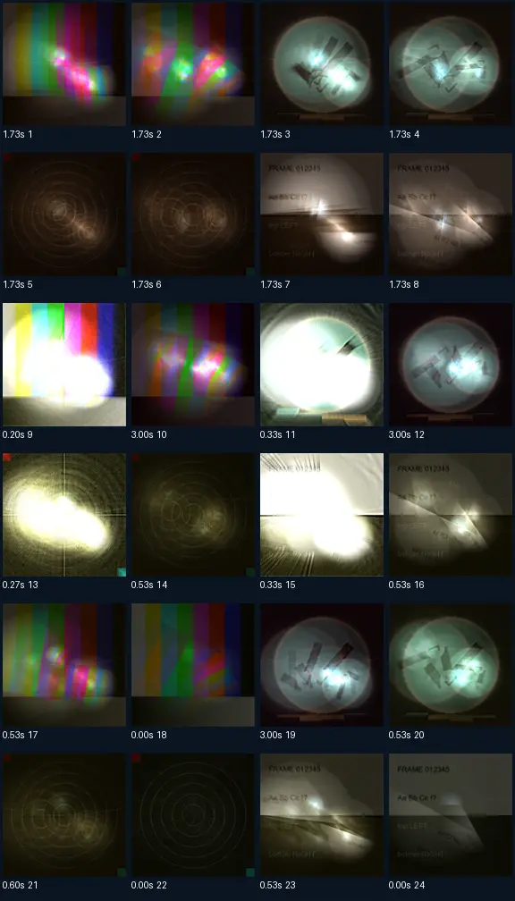
projectm · describedRovastar + Loadus + Geiss - Tone-mapped FractalDrop 7b
A dark visualisation built around red and orange. The selected frames suggest ring-like forms and fine particles with soft glow. With static inputs, output motion includes local warping, counterclockwise rotation, inward contraction.
Inspect supporting evidence →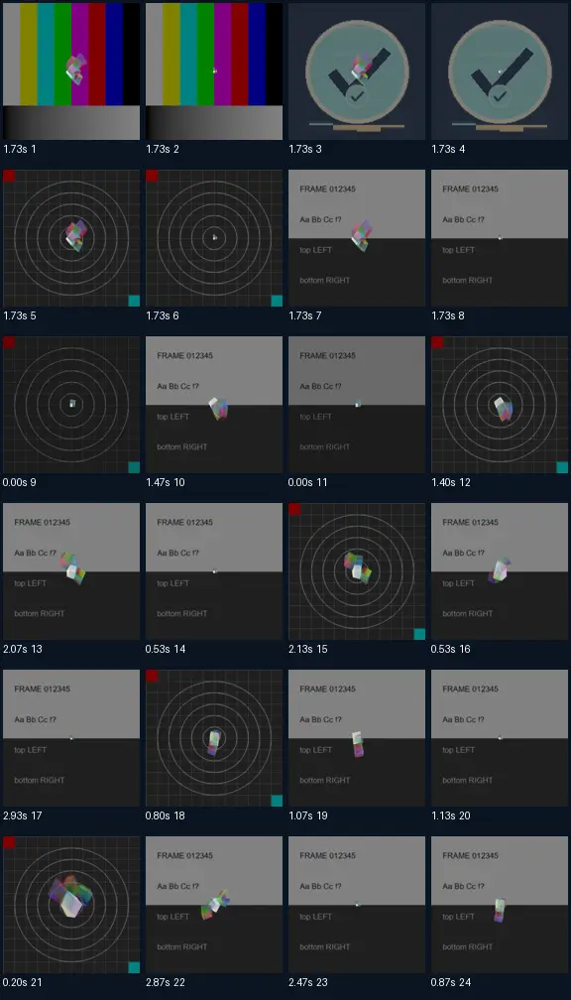
butterchurn · describedshifter - tumbling cubes
A dark visualisation built around turquoise and red. The selected frames suggest ring-like forms. With static inputs, output motion includes local warping, outward expansion, counterclockwise rotation.
Inspect supporting evidence →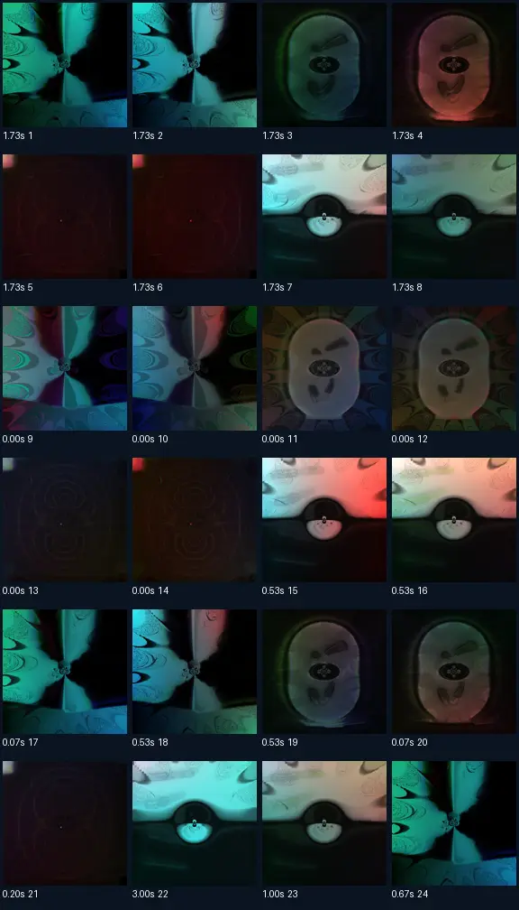
projectm · describedTonyMilkdrop - Angels Of Glory [Flexi - arrogance amplifier + alien complex] --- Isosceles edit
A dark visualisation built around cyan and turquoise. The selected frames suggest ring-like forms and fine particles with soft glow. With static inputs, output motion includes clockwise rotation. Brightness rises and falls in a recurring pulse. Fine source detail is strongly reduced in many tested frames.
Inspect supporting evidence →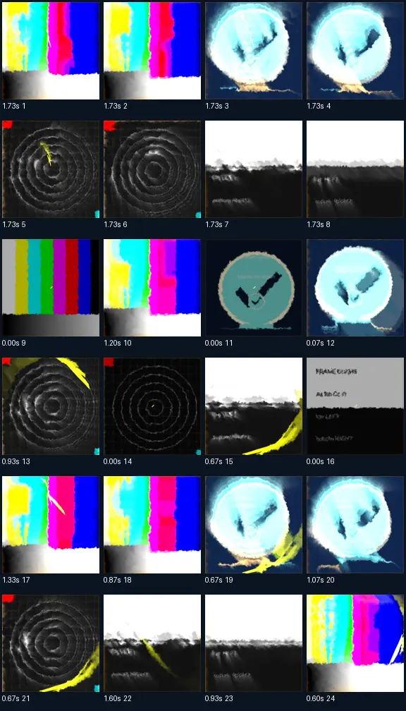
butterchurn · limitedORB - Pastel Primer
An abstract visualisation built around orange and turquoise. The selected frames suggest fine particles and ring-like forms with soft glow. The available frames do not establish a reliable movement pattern.
Inspect supporting evidence →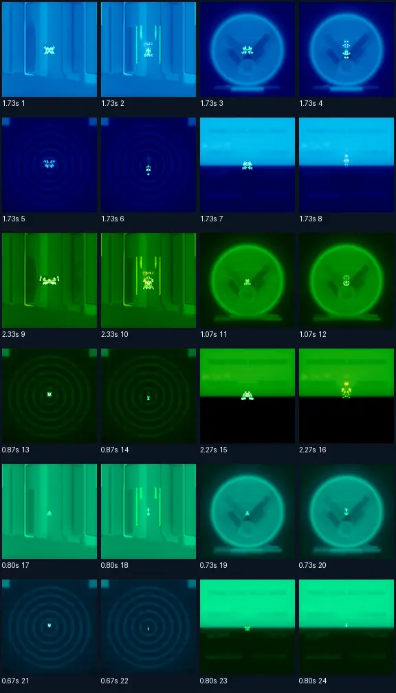
projectm · describedshifter - robotopia v2 molding chaos - little miss scale oven vs scala
An abstract, highly saturated visualisation built around cyan. The selected frames suggest fine particles and ring-like forms with soft glow. With static inputs, output motion includes outward expansion. Fine source detail is strongly reduced in many tested frames.
Inspect supporting evidence →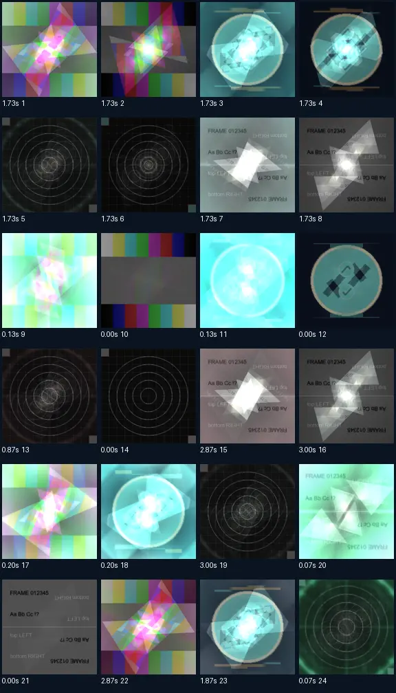
butterchurn · describedRovastar & Zylot - Crystal Ball (Many Visions Mix)
An abstract visualisation built around turquoise and orange. The selected frames suggest ring-like forms. With static inputs, output motion includes inward contraction, outward expansion.
Inspect supporting evidence →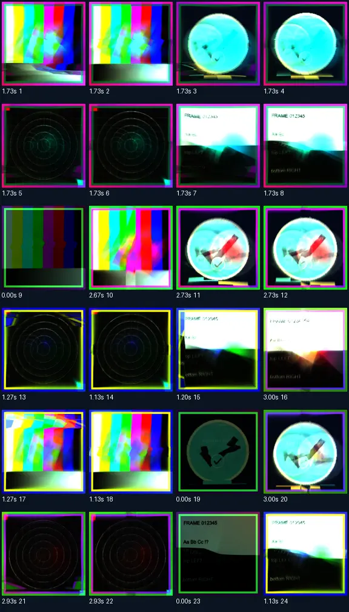
butterchurn · describedAderrasi - Hard Drink (Half-Infinitea)
An abstract, highly saturated visualisation built around turquoise and violet. The selected frames suggest ring-like forms with soft glow. With static inputs, output motion includes local warping.
Inspect supporting evidence →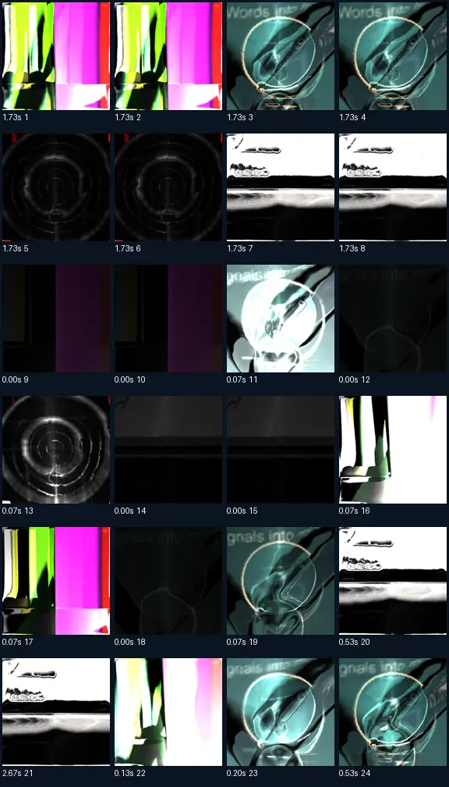
projectm · describedshifter - crosshatch neopsy - flies in the face ov
An abstract visualisation built around red and turquoise. The selected frames suggest ring-like forms with soft glow. With static inputs, output motion includes local warping.
Inspect supporting evidence →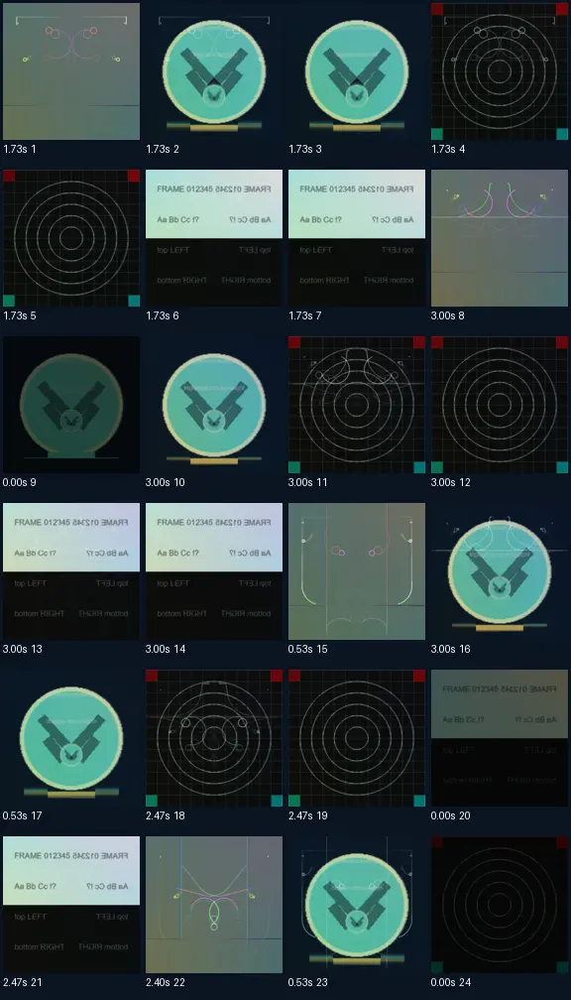
butterchurn · limitedfiShbRaiN - witchcraft
An abstract visualisation built around turquoise and green. The selected frames suggest ring-like forms with smooth gradients. The available frames do not establish a reliable movement pattern.
Inspect supporting evidence →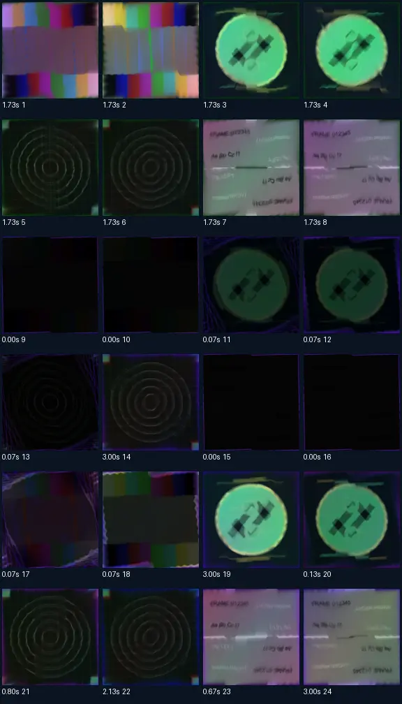
projectm · limitedPhat_Zylot_Eo.S. Trippy_rotation_v2_sector_mix_alt_colours
An abstract visualisation built around green and violet. The selected frames suggest ring-like forms. The available frames do not establish a reliable movement pattern.
Inspect supporting evidence →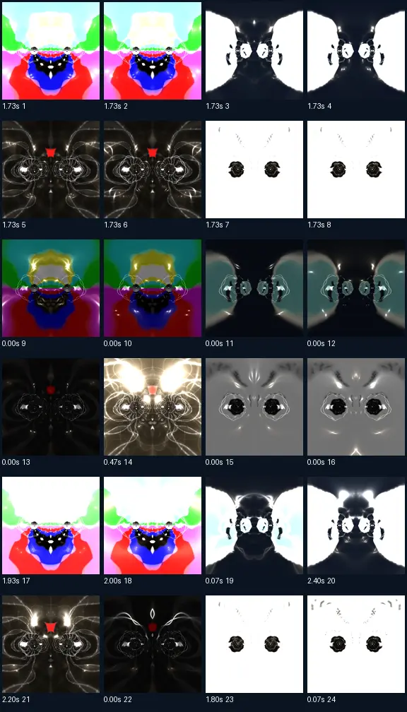
projectm · limitedSerge + martin - crystal palace bubble004
An abstract visualisation built around orange and blue. The selected frames suggest fine particles and petal-like radial geometry with soft glow. The available frames do not establish a reliable movement pattern. Some sampled frames wash out to almost pure white.
Inspect supporting evidence →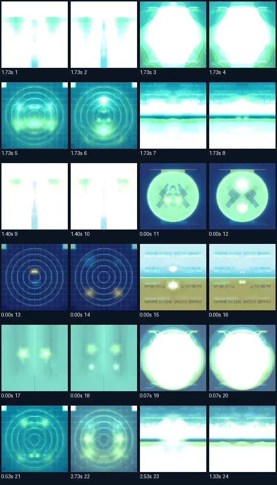
projectm · limitedWaltra - Sudden 2
A bright visualisation built around turquoise and cyan. The selected frames suggest ring-like forms and fine particles with soft glow. The available frames do not establish a reliable movement pattern. Fine source detail is strongly reduced in many tested frames.
Inspect supporting evidence →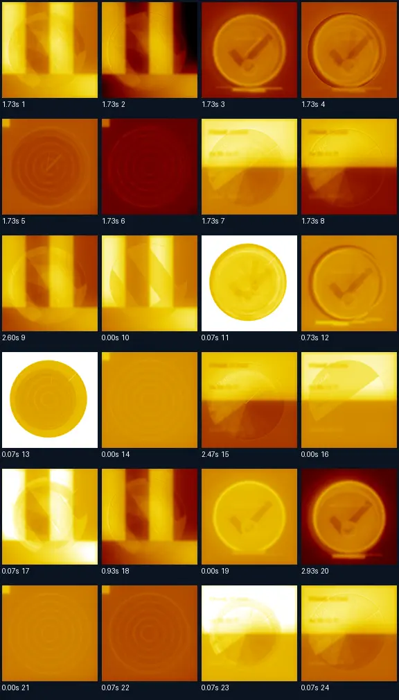
projectm · describedsuksma - tetraxectsual aeliaen kkuhltz --- Isosceles edit13
An abstract, highly saturated visualisation built around red and orange. The selected frames suggest ring-like forms. With static inputs, output motion includes outward expansion, clockwise rotation. Fine source detail is strongly reduced in many tested frames.
Inspect supporting evidence →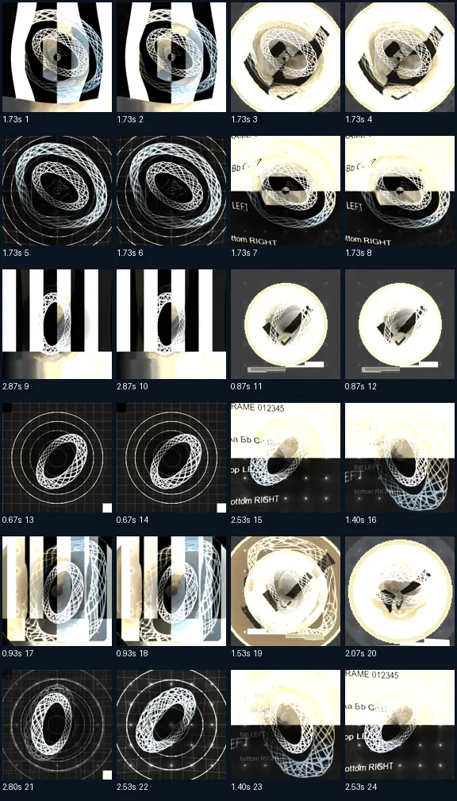
butterchurn · limitedGeiss + Flexi + Martin - disconnected
An abstract visualisation built around orange and cyan. The selected frames suggest ring-like forms. The available frames do not establish a reliable movement pattern.
Inspect supporting evidence →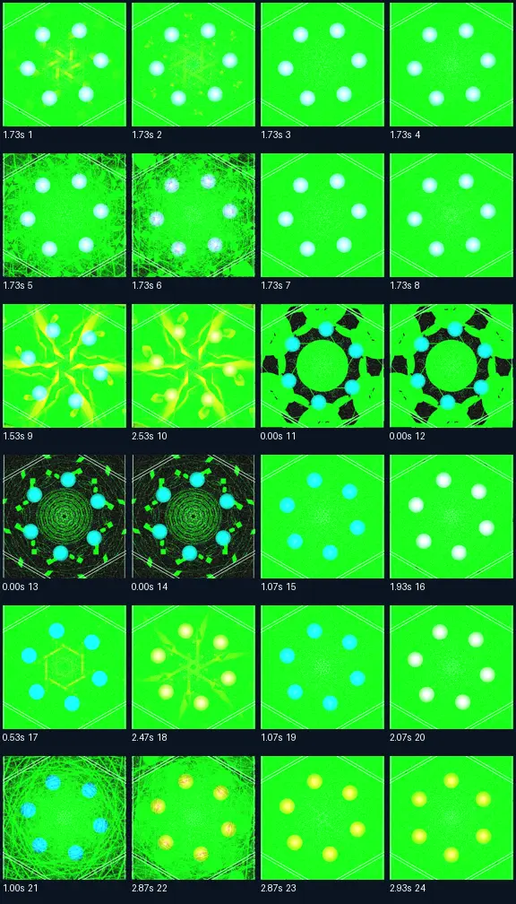
projectm · limitedBeat it Adam FX 2 flexi + fishbrain - operation fatcap [ebb and flow of memetic ov diffusion - fnord] + EoS 11
A bright, highly saturated visualisation built around green and lime. The selected frames suggest ring-like forms and fine particles with soft glow. The available frames do not establish a reliable movement pattern.
Inspect supporting evidence →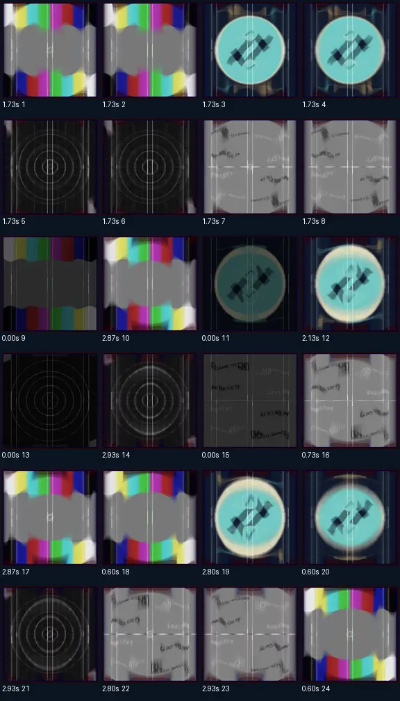
butterchurn · describedFvese-butterfly
An abstract visualisation built around indigo and turquoise. The selected frames suggest ring-like forms. With static inputs, output motion includes local warping, inward contraction. Brightness rises and falls in a recurring pulse.
Inspect supporting evidence →